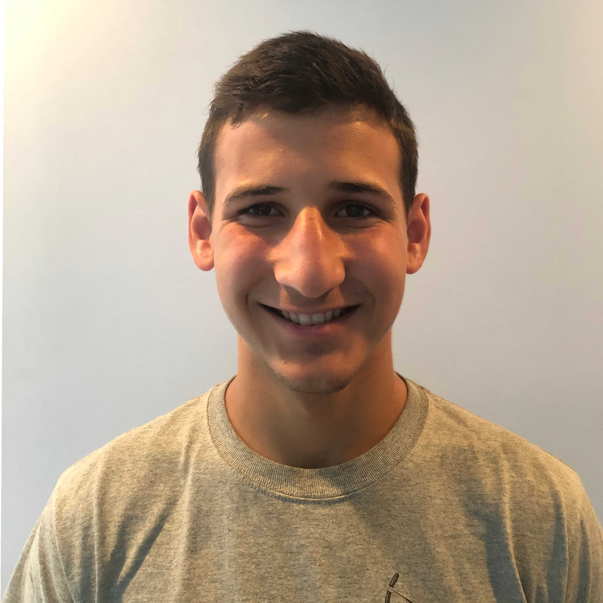

Principal Investigator

Ryan St. Pierre
Assistant Professor
Department of Mechanical and Aerospace Engineering
Department of Computer Science and Engineering
University at Buffalo
ryans@buffalo.edu
Google Scholar Profile
Postdoc Carnegie Mellon University
Ph.D. University of Maryland
B.S./M.S. Northeastern University
Ph.D Students

Reed Truax
Ph.D. Mechanical Engineering
B.S/M.E Mechanical Engineering RIT 2019
My research is focused on designing robust controllers for legged locomotion when subjected to sensing and computation constraints that are often found on micro-robots. Outside of the lab I spend my time swimming, climbing, hiking, and woodworking.

Audra Smith
Ph.D. Aerospace Engineering
B.S Carrol University
Audra Smith is an aerospace engineering PhD student, with a background in applied physics. She is currently conducting research on robotic metamaterials. In her free time, she enjoys making high power rockets, writing calligraphy, and watching films.
MS Students

Shashwat Singh
MS in Robotics
B.Tech Electronics - University of Allahabad
Hey! I am Shashwat Singh, currently pursuing a master's degree in robotics. Taking inspiration from biology to solve open challenges in designing microrobots with better mechanisms, actuation, and computational capabilities drives my interest in research. At the moment, I'm working on Buffalo Bytes, a highly mobile microrobot, and an autonomous jumping microrobot. Besides building cool robots, I enjoy working out, singing, and playing guitar.

Yashwant Narayana
MS Mechanical Engineering
M. Eng. Birla Institute of Technology
B.Tech. G.Pulla Reddy Engineering College
Hello! I am Yaswanth Narayana. I am a graduate student in the department of MAE. My research involves characterising a custom made electromagnetically activated resonant driven FWMAV(Flapping Wing Micro Air Vehicle) and investigating its performance at resonant frequency. I am interested in dealing with statics and dynamics of mechanical systems.

Aniket Burde
MS Robotics Engineering
Hello, I'm Aniket, a robotics graduate currently working on Micro Aerial Vehicles (MAVs) and exploring the exciting world of autonomous flight. In addition to my work on MAVs, I'm also passionate about creating robots that can interact with humans in new and innovative ways. Recently, I've been working on a small robot puppy project, which involves designing and building a miniature robotic dog that can mimic the movements and behaviors of a real puppy. Outside of my work, I'm an avid sports enthusiast. I'm always on the lookout for new challenges and opportunities to learn, and I'm committed to making a positive impact on the world through my work in robotics.
Undergraduate Students

Vasilisa Ignatova
BS Computer Engineering
Hi! My name is Vasilisa and I’m second-year computer engineering student. I’m originally from NYC and some of my favorite activities include painting, crocheting and playing the electric guitar. My current research interests revolve around swarm robotics.

Eric Xie
BS Computer Science| Minor in Robotics
My name is Eric. I am working on iOS app for Buffalo Bytes robot platform and object and face detection on power constrained small robots. I enjoy watching movies. Some of my all time favorite movies are “3-idiots”, “Forest Gump”, “Pursuit of Happyness”, and all Marvel movies before and including “Spider-Man: No Way Home”. I also make IOS apps and websites in my free time. If you have an app in mind, I’ll be happy to help.

Nolan Skowronski
BS Mechanical Engineering
Hello! My name is Nolan Skowronski. I am an undergraduate student studying Mechanical Engineering at the University at Buffalo. In the lab, I am focused on small scale jumping robots, but I also have an interest in solar powered robots. Outside the lab however, I love being in nature by hiking, camping, kayaking, biking, and snowboarding.

Timothy Washington
BS Aerospace Engineering
I'm currently majoring in aerospace engineering with a particular interest in quadcopters and spacecraft. I'm currently invested in researching the use of micro-robotics applications on micro-aircraft and quadcopters as well as anything to do with using nature and the natural world as inspiration for engineering pursuits in all subsets of engineering. I'm also a big fan of taking care of and learning about my plants or playing my saxophone when I have the time.

Yoonbin Cho
BS Mechanical Engineering
My major is Mechanical engineering and I am interested in robotics. Currently in the "Jumping Microbot" project.
I need to fix Shashwat's bad website formatting. Now, it looks perfect.
Alumni
Masters
Yaghnya Reddy Kuchikulla, M.S. Mechanical Engineering 2022, Remora
Amin Malek Pour, M.S. Mechanical Engineering 2022, GE Transport
Leanne Jamieson, M.S. Mechanical Engineering 2022
Bachelors
Patrick Harrington, B.S. Aerospace Engineering 2023
John Cemay, B.S. Aerospace Engineering 2022